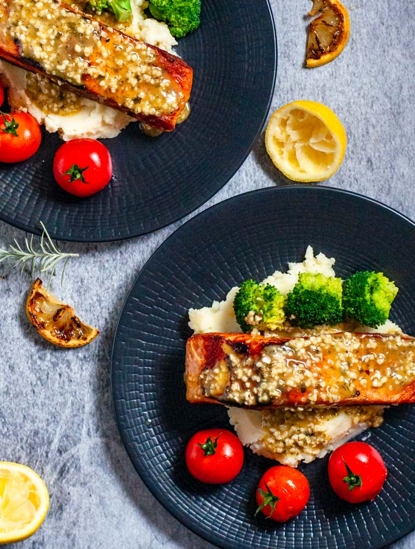

Salmon with mashed potatoes

This dish features a tender, pan-seared or baked salmon fillet served atop creamy mashed potatoes.
It's a simple yet elegant meal that pairs rich, flaky fish with smooth, buttery potatoes.
Ingredients:
- Salmon fillets, skin on or off
- Potatoes, peeled and quartered
- Butter and milk (or cream)
- Fresh dill, salt, and pepper
- Boil the potatoes in salted water until very tender, then drain.
- Mash the potatoes with butter and warm milk until smooth, and season.
- Season the salmon, then pan-sear or bake it until just cooked through.
- Place the salmon on a bed of mashed potatoes, garnish with dill, and serve.